| SOURCE | TITLE| IMAGE MATCH | click to source page |
| eBay | Spain - 1955 - 1Pta - Definitive Issue - General Franco - #18201 | eBay | 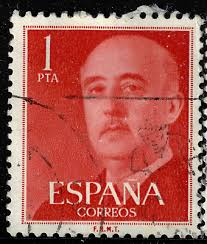 |
| eBay | SPAIN - ESPAÑA - YEAR 2002 COMPLETE SET MNH Sc# 3151 POLITICIAN ALEJANDRO MON | eBay | 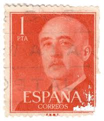 |
| Colnect | Postsegel: Franco, General (Spanje(General Franco (V) 1955-1975) Mi:ES 1050a,Sn:ES 825,Yt:ES 864,Sg:ES 1216,AFA:ES 1152,Edi:ES 1153,Un:ES 864 📮 | 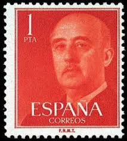 |
| Colnect | Timbre: Franco, General (Espagne(General Franco (V) 1955-1975) Mi:ES 1050a,Sn:ES 825,Yt:ES 864,Sg:ES 1216,AFA:ES 1152,Edi:ES 1153,Un:ES 864 📮 | 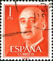 |
| eBay Australia | Stamp(SP191) 1955 Spain 1p Orange ow1216 | eBay Australia | 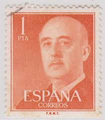 |
| Dreamstime.com | SPAIN - CIRCA 1949: Stamp Printed in Showing a Portrait of General Francisco Franco 1892-1975 Editorial Photo - Image of philatelic, leader: 76460646 | 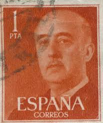 |
| Amazon.com | Amazon.com: Spain 1050b unmounted Mint/Never hinged ** MNH 1955 Francisco Franco (Stamps for Collectors) : Toys & Games | 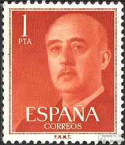 |
| Dreamstime.com | SPAIN - CIRCA 1949: Stamp Printed in Spain Showing a Portrait of General Francisco Franco 1892-1975 , Series Francisco Editorial Photography - Image of paper, canceled: 76460357 | 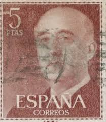 |
| iStock | Stamp Showing A Portrait Of General Francisco Franco 18921975 Circa 1949 Stock Photo - Download Image Now - iStock | 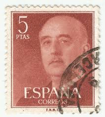 |
| eBay UK | Spain - 1955 - Definitive Issue - General Franco - 1Pta - #03 | eBay UK | 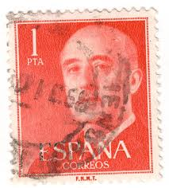 |
| Bob Shop | Spain & Colonies - 1955 SPAIN GENERAL FRANCO was listed for 1.20 on 24 Jul at 09:31 by TROTSKIE in Cape Town (ID:646637229) | 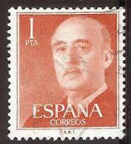 |
| Dreamstime.com | Isolated Spain Stamp editorial photography. Image of stamp - 283960782 | 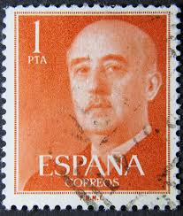 |
| PicClick | Espana Correos Stamp 1 Pta FOR SALE! - PicClick | 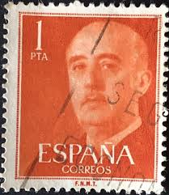 |
| Dreamstime.com | Francisco Franco Who Ruled Over Spain As a Military Dictator from 1939 until 1975 Editorial Photography - Image of mail, nationalism: 184123772 | 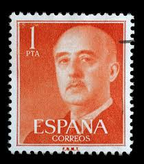 |
| Dreamstime.com | 274 Spain 1960 Stock Photos - Free & Royalty-Free Stock Photos from Dreamstime | 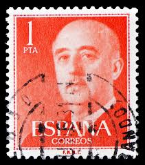 |
| Alamy | MERIDA, EXTREMADURA, SPAIN; DIC, 01, 2.018 - Stamp showing a portrait of General Francisco Franco 1892-1975. CIRCA 1949 Stock Photo - Alamy | 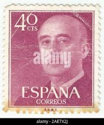 |
| Dreamstime.com | Postage stamp editorial image. Image of politician, head - 218648220 | 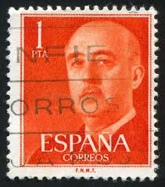 |
| Shutterstock | 17+ Thousand Spanjaard Royalty-Free Images, Stock Photos & Pictures | Shutterstock | 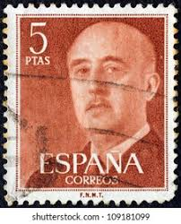 |
| 1955 Spain Stamp – General Franco 1 Pta Orange (#1090) 🟠 Attention all stamp collectors and history lovers! Today we're featuring a rare 1955 Spanish stamp depicting General Francisco Franco, Spain's historical | 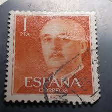 | |
| allnumis.com | 1 Peseta 1955 - Franco, General, Person-Personalities-Man - Spain - Stamp - 51956 | 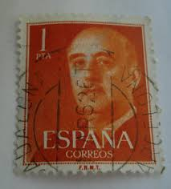 |
| eCRATER | Spain Postage Stamp 1955 Scott# ES 825 Used 1 Pta Franco, General F | 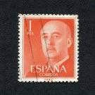 |
| Alamy | SPAIN - CIRCA 1961: A stamp printed in Spain shows Francisco Franco, circa 1961 Stock Photo - Alamy | 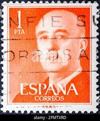 |
| Shutterstock | 5+ Hundred General Francisco Franco Royalty-Free Images, Stock Photos & Pictures | Shutterstock | 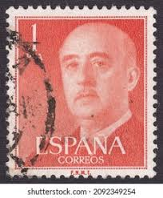 |
| iStock | Postage Stamp From Spain Stock Photo - Download Image Now - Bridge - Built Structure, Close-up, Extreme Close-Up - iStock | 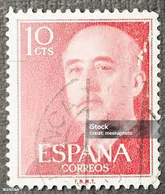 |
| Shutterstock | 12+ Thousand Spain Mail Stamp Royalty-Free Images, Stock Photos & Pictures | Shutterstock | 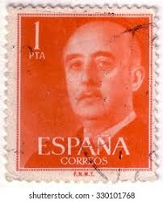 |
| Dreamstime.com | Postcard from 1955, Showing the Centre and Church of the Village Bohan-sur-Semois As Seen from the Roche La Dame Editorial Photo - Image of postcard, belgialaquo: 177567796 | 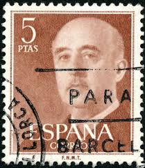 |
| Todocolección | españa 1961 capitalidad de madrid. usado. - Buy Used stamps of the Second Centenary on todocoleccion | 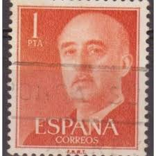 |
| Dreamstime.com | 6,335 Spain Circa Stock Photos - Free & Royalty-Free Stock Photos from Dreamstime | 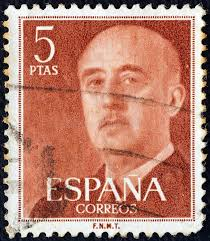 |
| Shutterstock | Spain Postage Stamps: Over 11,900 Royalty-Free Licensable Stock Photos | Shutterstock | 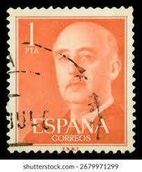 |
| Alamy | SPAIN - CIRCA 1954: a stamp printed in the Spain shows General Franco, Caudillo of Spain, Head of State, circa 1954 Stock Photo - Alamy | 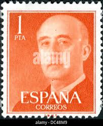 |
| Todocolección | edifil 1546 alcazar de segovia 1964 1 peseta us - Comprar Selos usados do Segundo Centenário no todocoleccion | 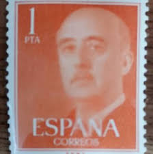 |
| iStock | Former Dictator Of Spain Stock Photo - Download Image Now - Black Background, Black Color, Cent Sign - iStock | 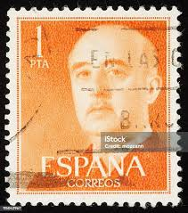 |
| Alamy | Postal stamp spain hi-res stock photography and images - Alamy | 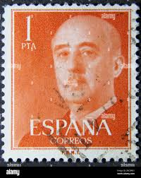 |
| Shutterstock | 2+ Thousand Dic Royalty-Free Images, Stock Photos & Pictures | Shutterstock | 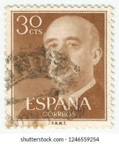 |
| Alamy | Photo of a brown 10 centimos Spanish postage stamp featuring an image of Francisco Franco Bahamonde from 1955 Stock Photo - Alamy | 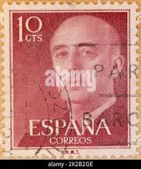 |
| Alamy | Philately. Postage stamps. Spain Franco serie (1950's Stock Photo - Alamy | 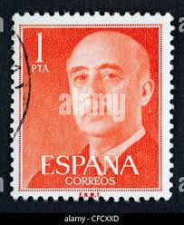 |
| Shutterstock | Spain Circa 1955 Orange Color Postage Stock Photo 202882951 | Shutterstock | 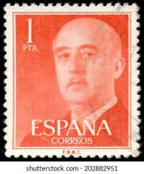 |
| Ronald Iannacone (ronald02041976) - Profile | Pinterest | 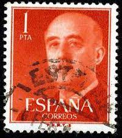 | |
| Dreamstime.com | Stamp Showing a Portrait of General Francisco Franco 1892-1975. Editorial Stock Image - Image of franco, extremadura: 164051864 | 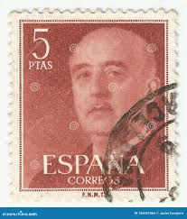 |
| Alamy | General franco 1975 hi-res stock photography and images - Page 2 - Alamy | 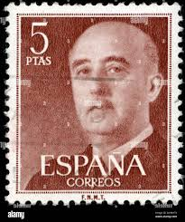 |
| Shutterstock | 1+ Hundred Francisco Franco Bahamonde Royalty-Free Images, Stock Photos & Pictures | Shutterstock | 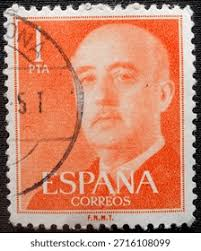 |
| Alamy | SPAIN - CIRCA 1949: stamp printed by Spain, shows medieval Knight, circa 1949 Stock Photo - Alamy | 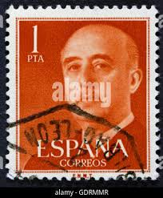 |
| Alamy | Francisco Franco Bahamonde (1892-1975), Spanish general, politician, Head of State, dictator, Caudillo, postage stamp, Spain, 1939 Stock Photo - Alamy | 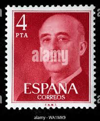 |
| PicClick UK | C. 1949 GENERAL Franco Spain stamp 50 cts - see scan £1.97 - PicClick UK | 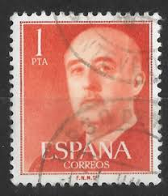 |
| Shutterstock | 2+ Hundred 1 Peseta Royalty-Free Images, Stock Photos & Pictures | Shutterstock | 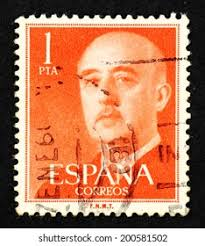 |
| Dreamstime.com | MERIDA, EXTREMADURA, SPAIN. DIC, 01, 2.108 - a Stamp Shows the Spanish Dance of Aragon La Jota. CIRCA: 1 Editorial Stock Image - Image of philately, postage: 164042749 | 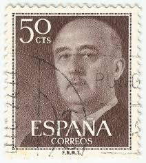 |
| Alamy | Cancelled postage stamp printed by Spain, that shows The Our Lady of Guadalupe, circa 1954 Stock Photo - Alamy | 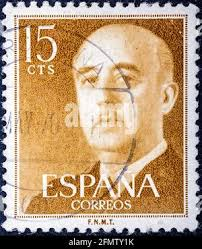 |
| Dreamstime.com | 1960 S GMC V6 General Motors Tuck Company 1966 C-series Green Pickup Truck with Rust in Parking Garage. Editorial Stock Image - Image of motors, garage: 300711179 | 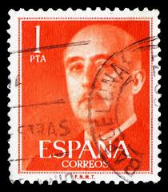 |
| Ednex Nexus (ednexn) - Profile | Pinterest | 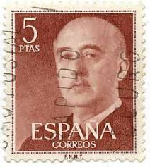 | |
| ebid.net | Spain 1955 General Franco 1Pta Used Stamp on eBid United Kingdom | 218559144 | 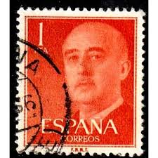 |
| Todocolección | 1 sello usado, serie, año 1966, edifil 1709, sa - Buy Used stamps of the Second Centenary on todocoleccion | |
| Dreamstime.com | SPAIN, CIRCA 1.970. Stamp Prnited in Spain Show Prehistorical Figueres Painted in a Rock of Morella Cave Editorial Photography - Image of petroglyph, prnited: 164039712 | |
| Alamy | SPAIN - CIRCA 1949: A stamp printed in Spain shows Francisco Franco, circa 1949 Stock Photo - Alamy | |
| iStock | Stamp Showing A Portrait Of General Francisco Franco 18921975 Circa 1949 Stock Photo - Download Image Now - iStock | |
| Alamy | Franco spanish hi-res stock photography and images - Alamy | |
| eBay | Foreign Stamp 1PTA Espana Used - #7175 | eBay | |
| Alamy | Francisco Franco Bahamonde (1892-1975), Spanish general, politician, Head of State, dictator, Caudillo, postage stamp, Spain, 1955 Stock Photo - Alamy | |
| Colnect | 西班牙: 郵票[年: 1955] [1/16] : Colnect 📮 | |
| Shutterstock | 2+ Hundred Bahamonde Royalty-Free Images, Stock Photos & Pictures | Shutterstock |